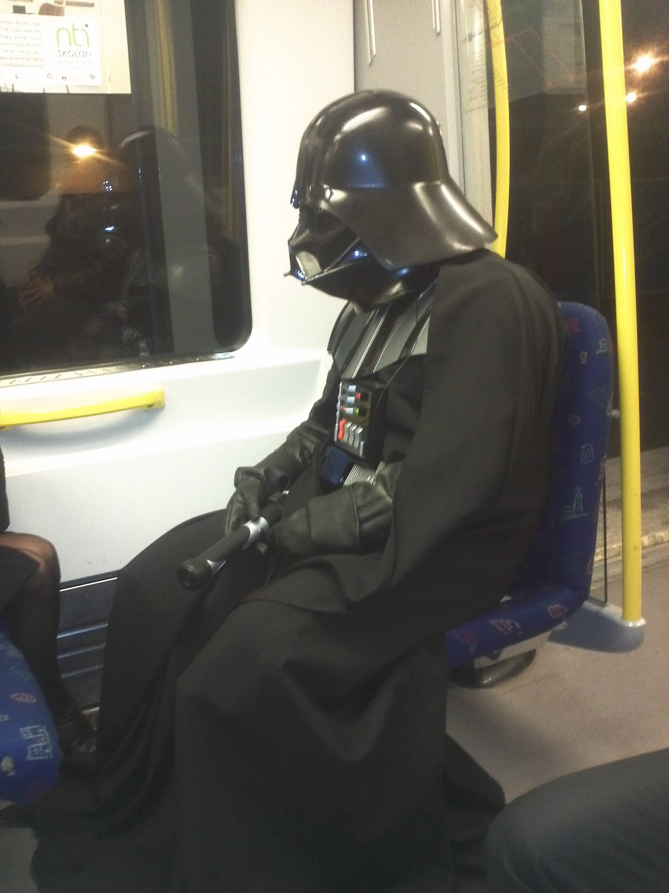

Hello
This is about Anakin Skywalker, so no funny Obi-Wan jokes here despite how easy it would have been.
Anakin Skywalker
Contents
Early Life
Anakin was born at a young age, where he then went on to get older. Some early activities he partook in include:
- Pod-Racing
- Slave Labour
- Creation of Anthony Daniels
- Destruction and Sabotage of Major Corporate Property
- Spinning
War Crimes
The Geneva Convention was a checklist for him. Some of these checks include:
- Fake Surrender(s)
- Torture of PoW(s)
- Execution of Non-Combatant(s)
- Usage of Child Soldiers
- and many more i can't easily google
Supposedly he only has a kill count of around 150,000, which seems low for the actions he would generally take.
Depressed Darth
His wife dies so the natural response is to join the man who manipulated him into pushing away everyone who cared about him so they could rule the Galaxy together as the Empire. Because of course.
Anyway here's a collection of some of the people he left to die or just completely abandoned because he wanted to save them:
Dead
He does eventually do the die but he keeps on living because Disney need to make more money from him due to their sequel trilogy being the worst piece of Star Wars content ever created.